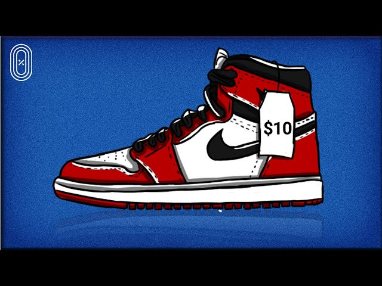

Factors Influencing the High Cost of Footwear Despite Inexpensive
Production.

Art of shoe pricing Footwear is a highly demanded product with a
wide range of prices, from affordable to extravagant. While the
production of many shoes may not be as expensive as the price of the
shoes. This research delves into the factors responsible for this.
We wanted to investigate the underlying factors that contribute to
the high prices of certain shoes, despite relatively low production
costs. By examining various aspects of the footwear industry, this
study seeks to shed light on the reasons behind the price
differentials in the market. The research relies on a combination of
online resources, including industry reports and academic papers.
To answer the (sub)question, “Why are some shoes so expensive, even
though the production is cheap?” We used a combination of online
resources and data analysis. After we searched for our information.
We concluded that six main factors affect the price of the shoes on
the market.
Brand and reputation
Iconic sneaker brands like Nike and Adidas are
often associated with quality, style, and exclusivity. For example,
Nike's Air Jordan line is known for its quality and iconic style,
and the brand's reputation for producing exclusive and stylish
sneakers justifies their higher prices.
Marketing and promotion
High-end sneaker brands invest significantly
in marketing and promotion to create an image of desirability. For
instance, Adidas collaborates with celebrities and designers on
limited-edition releases, and their marketing campaigns frequently
involve high-profile endorsements and unique storytelling. The costs
associated with marketing and promotion contribute to consumers'
final price for these exclusive and aspirational sneakers.
Design and Innovation
Sneakers with unique designs, innovative
features, and high-quality materials typically come with premium
price tags. Take, for example, the Nike Air Max series, known for
its innovative Air cushioning technology. The unique design and
technological innovation make these sneakers stand out and justify
their higher cost.
Supply Chain Complexity
When multiple intermediaries, such as
distributors and retailers, are involved in the supply chain, it can
add to the final price of sneakers. Luxury sneaker brands that are
distributed through high-end retailers, like Balenciaga, often
attract additional costs as each party takes a share of the profit,
contributing to the overall expense.
Materials and craftsmanship
Luxury sneakers are frequently made from
premium materials like fine leather or exotic materials and are
crafted with meticulous attention to detail. For instance, Common
Projects is known for its minimalist, high-quality leather sneakers,
and the use of top-notch materials and craftsmanship justifies its
higher price.
Retail Markup
Retailers add a markup to cover their operating expenses,
including rent, and staff salaries, and to make a profit. When you
purchase high-end sneakers from a boutique or a premium sneaker
store. A portion of the price you pay goes toward covering the costs
of the retail space and the salaries of the employees who provide
you with a high-quality shopping experience.
In conclusion, sneaker brands regularly charge higher prices due to
their reputation for quality, marketing and promotion efforts,
unique designs and innovative features, supply chain complexities,
the use of premium materials, and retail markup. These factors
contribute to the overall cost of luxury sneakers. By understanding
these factors, consumers can make informed purchasing decisions, and
businesses can optimize their pricing strategies.
What are the costs of producing limited-edition shoes?

The cost of making limited edition sneakers can vary widely depending on several factors, including the brand, materials used, manufacturing processes, and the number of units produced. Limited edition sneakers are often made with higher-quality materials and may involve more complicated design and craftsmanship, which can drive up production costs.
Most limited-edition shoes are made from the following materials; leather, textiles, synthetics, rubber, foam, and plastic. The most expensive material of them all is leather. Ehow says, “You can expect to use one and a half to two times that leather creating the uppers; thus, you should count on 3 square feet (0.28 m²)--nominally--to make a simple pair of costume shoes. Four is more likely.” Sneaker producers use calfskin leather for production. If you search for an average price for that type of leather, the average price will be $4.96 per square foot. So for one pair of sneakers, limited edition producers pay $19.84($4.96 × 4) for the materials.
Design and development
Designing and developing are external to the production, but can still have an influence on the price of limited edition sneakers. The price of making a prototype of limited edition sneakers is put into a table produced by the shoemaker academy. The table describes what a developer charges for every step of the design process.
| Design phase |
Cost |
| Mold of the shoe |
$0 – $750 |
| A pattern based on drawing |
$250 – $500 |
| Outsole blueprint |
$150 – $600 |
| Solid model of the outsole |
$100 – $400 |
| Prior sample pair |
$50 – $100 |
| Prototype pair |
$50 – $100 |
| Total |
$600-$2450 |
Manufacturing location
Sneaker companies, such as Nike and Adidas, outsource production to more than one million workers in factories in China and other countries around the world, where the labor costs are relatively cheap, this helps to minimize manufacturing costs.
For example, it costs Nike $28.50 to make one pair of shoes with a retail price of $100. An article in Investopedia says; “Nike's cost breakdown includes approximately $25 per pair for Chinese factory labor and overhead costs, plus $1 in shipping and $2.50 in duty costs.”
In recent years, rising costs of labor in China have impacted profit margins, and in response, some companies have moved their manufacturing operations to Vietnam, India, Indonesia, or Thailand. In addition, the big shoemakers are atomizing to reduce labor costs.
Production volume
A lot of sneaker brands produce very big quantities of sneakers but also throw unsold ones in landfills. An example of Han highly produced sneakers is the Air Jordan 1 next chapter, which has a rumored production of 73,000 pairs according to an article on si.com. For such a huge amount of shoes, the adult-sized shoes cost $200 on the Nike website when it was released.
Special features
Deals with star athletes and celebrities can help shoemakers sell sneakers at a higher price. If a celebrity is a face of the brand, the shoes will sell out faster at releases, because the shoes seem more exclusive. Celebrities like Kanye West and Micheal Jordan get profit from every pair sold. Kanye West gets 15% off every pair sold at first release, for example, the average Yeezy costs $220, so Kanye gets $33 per shoe that is being sold($220 x 0.15), but every time he promotes the shoes he also gets money from Adidas. Michael Jordan also gets 5% of Jordan’s earnings.
Marketing
Unpacking videos are viral on social media, brands pay a lot to influencers to make these videos, and they annually get $173 for making one YouTube video. But depending on followers, the lay on Instagram is from $75 to $3000 per post. But the highest pay is on Snapchat for $175 to $5000 per post depending on your views.
If you count the materials, manufacturing location, and special features, then the price of one pair of shoes would be $56.34. This means that those economic factors keep the price and production of the limited edition sneakers. However, the production volume, design development, and marketing make the shoes way more expensive because it makes limited edition sneakers more appealing and valuable to consumers. The complex interaction of these factors results in the diverse and often premium pricing of these sought-after foot wears. This results in the need for a second market where newer brands try to be more fair in the selling and producing of shoes for nature and consumers.
The art and business of the concept reselling
.jpeg)
Shoe reselling refers to the practice of buying sneakers at retail
prices with the intention of reselling them at a higher price, often
for a profit. This phenomenon has gained significant popularity in
recent years, driven by the booming sneaker culture, limited-edition
releases, and the rise of online marketplaces. The sneaker resale
market has become a lucrative industry, with some highly
sought-after pairs fetching prices far above their original retail
value. Several factors contribute to the emergence and growth of the
shoe reselling market:
Limited Editions and Hype Releases:
Sneaker brands frequently release limited-edition or exclusive
designs that generate significant hype among sneaker enthusiasts.
Limited availability and high demand create a resale market where
individuals are willing to pay a premium to get their hands on these
rare kicks.
Collaborations and Celebrity Endorsements:
Collaborations between sneaker brands and celebrities or designers
can result in highly coveted and exclusive shoe releases. The
association with a popular figure or brand can significantly
increase the desirability of the sneakers, driving up resale prices.
Online Marketplaces:
The rise of online platforms and marketplaces has made it easier for
individuals to buy and sell sneakers. Websites like StockX, GOAT,
and eBay provide a platform for resellers to connect with potential
buyers and establish market prices.
Sneaker Culture and Fashion Trends:
The cultural significance of sneakers has evolved beyond athletic
footwear. Sneakers are now considered fashion statements, and people
are willing to invest in unique and stylish designs. This cultural
shift has fueled the demand for exclusive and limited-edition
sneakers.
Investment Potential:
Some individuals view sneaker reselling as a form of investment.
They anticipate that the value of certain limited-edition or rare
sneakers will increase over time, allowing them to sell the shoes at
a higher price in the future. However, the growth of the shoe
reselling market has sparked debates about ethics and accessibility.
Critics argue that the practice contributes to inflated prices,
making it difficult for genuine sneaker enthusiasts to acquire the
shoes they love at retail prices. Additionally, issues such as bot
usage (automated programs that can quickly purchase limited-edition
releases online) have led to increased difficulty for regular
consumers to secure highly sought-after releases.
In conclusion, shoe reselling is a multifaceted phenomenon that has
emerged as a result of the intersection of fashion, culture, and
e-commerce. While it offers opportunities for entrepreneurial
individuals to make a profit, it also raises questions about
fairness, accessibility, and the impact on the broader sneaker
community
Why do some limited edition sneaker providers decide to be cheaper than others?
The cost of making limited edition sneakers can vary widely depending on several factors, including the brand, materials used, manufacturing processes, and the number of units produced. Limited edition sneakers are often made with higher-quality materials and may involve more complicated design and craftsmanship, which can drive up production costs.
Limited edition sneakers may be priced more affordably to make them more accessible to a wider audience. Brand loyalty and expanding their customer base can be achieved with this, by companies and resellers. If prices are not affordable, customers will look for affordable alternatives. In most cases, that will be one-on-ones (knock-offs). These products are from the counterfeit market. Based on conversations with resellers at Sneakerness we could notice that there are five reasons for some providers deciding to be less expensive than their competitors when it comes to limited edition sneakers.
Brand strategy
Limited edition sneakers may be priced more affordably to make them more accessible to a wider audience. Brand loyalty and expanding their customer base can be achieved with this, by companies and resellers. If prices are not affordable, customers will look for affordable alternatives. In most cases, that will be one-on-ones (knock-offs). These products are from the counterfeit market
Market Competition
Competition in the sneaker market can be the reason for some providers to set lower prices to attract more customers. Lower pricing can be a strategy to gain a competitive edge over other brands or resellers. It’s also important for resellers to take in consideration that the sneakers that they are reselling can be a seasonal “must have” piece.
Production Costs
The cost of producing sneakers can be different per brand, and some brands may have more efficient production processes or sourcing methods, allowing them to offer limited editions at a lower price. For example, automizing instead of hand work.
Marketing Objectives
Brands may be more attracted to other marketing objectives over maximizing profits on limited edition releases. They might use these releases to generate buzz, build hype, or create brand awareness on social media, even if it means lower profit margins. Some resellers use a strategy of quickly selling sneakers to have more profit, that means that they are not prioritizing their individual sales but their quantity.
Supply
The shortage of limited edition sneakers can drive up their resale value, which some providers may want to avoid. Because the demand being higher than the supply, brands sometimes differ accessibility of their products. For example, a lot of the resellers at Sneakerness only sold certain shoes at the event. This ensures their products end up in the hands of genuine enthusiasts rather than being resold for exorbitant prices.
To summarize, providers intend to cheapen their prices to avoid driving up resale values. This ensures that the shoes get into the hands of genuine enthusiasts, rather than becoming products that are being sold at extravagant prices, leading to a secondary market of the knock-offs. Essentially, the choice to adopt a more affordable pricing strategy is a clever way influenced by combining brand strategy, market dynamics, production efficiency, and long-term marketing goals.
From Luxury Pricing to Limited Edition Resells
The cost of making limited edition sneakers can vary widely depending on several factors, including the brand, materials used, manufacturing processes, and the number of units produced. Limited edition sneakers are often made with higher-quality materials and may involve more complicated design and craftsmanship, which can drive up production costs.
Ultimately, materials, manufacturing country, exceptional highlights, production volume, plan improvement, and showcasing determine the pricing of sneakers are the factors influencing the price of limited edition sneakers. The complicated association of these variables makes special designs and expensive prices for the most demanded sneakers. Monetary factors, for example, material expenses and creation area all summarize the estimated $56.34 cheap production price for a pair of shoes. Nonetheless, other factors such as production volume, design development, and marketing activities raise the price of these limited edition sneakers,
increasing their charm and assets to consumers.
Shoe reselling has grown into a diverse event influenced by fashion, culture, and e-commerce. While it provides financial gains, it raises concerns about fairness, accessibility, and the influence on the sneaker community. To avoid getting mixed into these concerns, some providers deliberately use cheaper pricing techniques, ensuring that true enthusiasts rather than resellers buy the shoes. This strategy is affected by a blend of brand strategy, market dynamics, production efficiency, and long-term marketing objectives.
According to survey results, consumer behavior is influenced by factors such as brand loyalty, designs, trends, and resale values. While the survey’s estimated production cost matches the concluded cost, consumers are prepared to pay more for sneakers, even though many have the opinion that resellers add up to the reasoning of unjust pricing. If consumers take these factors into consideration, they will be more conscious when purchasing in the future, this will lead to businesses adopting their strategies to meet market demands and consumer expectations.
These factors have contributed to the emergence of a secondary market that is affordable but also sells the same designs of these expensive shoes. This market is also known as the counterfeit market.
.jpeg)